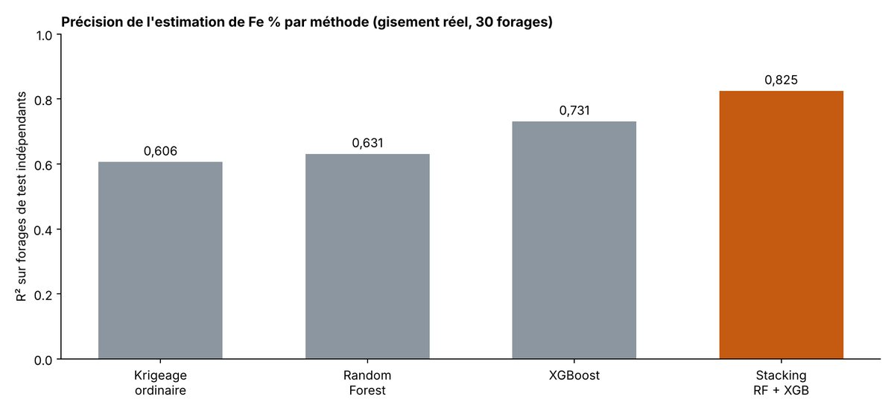

Mines, estimation de ressources
Estimer un gisement de fer à partir de 30 forages
Le krigeage lisse les teneurs et sous-estime le minerai riche. J'ai comparé quatre méthodes sur des forages tenus à l'écart, puis classé les ressources selon le code JORC 2012.
0,61 → 0,83R² de l'estimation, du krigeage ordinaire au stacking Random Forest + XGBoost
Python, scikit-learn, XGBoost, PyKrige, Leapfrog Geo, Isatis.neo, Surpac